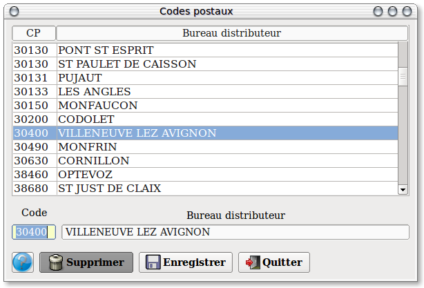
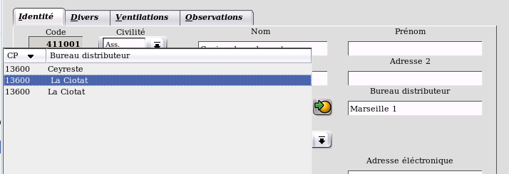

~ Comptabilité & facturation Laurux ~

~ Comptabilité & facturation Laurux ~ |
|
|
|
Lors de la saisie des codes postaux, en fiche clients et fournisseurs ainsi qu'en facturation, le bureau distributeur s'affichera automatiquement si le code postal est préalablement renseigné dans la table des codes postaux. Comment cette table se met-elle à jour ?
De trois façons : La première, par la table des codes postaux.
.
La seconde par la saisie d'un code postal inexistant par les fiches clients ou fournisseurs ainsi que par la facturation.

On saisit le code postal, si un seul bureau distributeur est assossié à ce code postal, le bureau distributeur s'affichera, si plusieurs bureaux distributeurs ont le même code postal alors on aura une fenêtre qui s'ouvrira afin de choisir le bureau souhaité.
Si le code postal n'existe pas alors il s'ajoutera a la table. Ainsi la
table s'enrichira au fur et à mesure des saisies.
La
troisième
possibilité de mettre à jour la table des codes postaux est de passer
par l'utilitaire "Impcpostaux" qui va permettre la création automatique
de l'ensemble des codes postaux des départements français (y compris
l'outre mer) à partir d'un fichier texte nommé "Cpostaux.csv" (livré
avec l'exécutable) situé
sous le répertoire Laurux.
On lance le programme "Impcpostaux" en allant sous
"Gestion" ==> "Outils" ==> "Appel programme".
NB : L' exécution de ce programme prend quelques
minutes.
----------------------------------------------------------------------------------------------------------------------